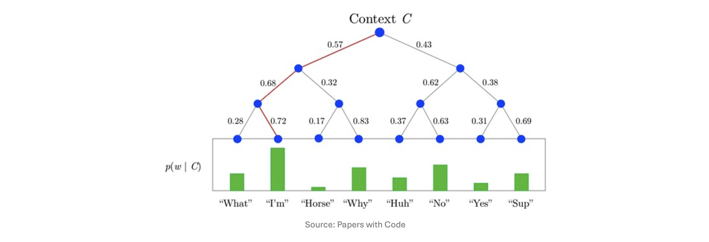

1. Introduction: Word2Vec의 아이디어를 그래프로 (Motivation)
이전 포스트에서 우리는 노드 임베딩의 목표가 “원본 네트워크에서의 유사도(\(\text{similarity}_G(u,v)\))를 임베딩 공간의 내적(\(z_u^\top z_v\))으로 근사하는 것”임을 확인했습니다. 그렇다면 “그래프 상에서 두 노드가 유사하다”는 것은 수학적으로 어떻게 정의할 수 있을까요?
이 질문에 답하기 위해 DeepWalk는 자연어 처리(NLP) 분야의 혁명이었던 Word2Vec의 아이디어를 차용합니다. Word2Vec은 “하나의 문장 안에서 윈도우 크기(Window size, \(L\)) 내에 인접하여 함께 등장하는 두 단어 \(u\)와 \(v\)는 의미적으로 유사하다”고 가정합니다.
그렇다면 그래프에서는 어떨까요? 노드 간의 연결망 위를 무작위로 이동하는 무작위 보행(Random Walk)을 통해 방문한 노드들의 시퀀스 \(u_1, u_2, \dots, u_n\)을 하나의 ’문장’으로 간주해 보는 것입니다. 이 시퀀스 안에서 \(L\) 스텝 이내에 함께 등장하는 노드 \(u_i\)와 \(u_j\)를 유사하다고 정의하는 것이 바로 DeepWalk의 핵심 동기입니다.
1.1. 왜 무작위 보행(Random Walks)인가?
- Random Walk를 통해 생성된 시퀀스에서 노드 \(u\)와 \(v\)가 자주 함께 등장(Co-occur)한다면, 우리는 다음 두 가지 사실을 유추할 수 있습니다.
- 두 노드가 그래프 상에서 위상적으로 가깝다. (최대 \(L\)-hop 거리 내에 존재)
- 두 노드가 강한 연결성을 가진다. (많은 이웃을 공유함)
- 따라서 \(\text{similarity}_G(u, v)\)를 “무작위 보행에서 두 노드가 함께 등장할 빈도(Frequency)”로 정의하고, 이것이 임베딩의 내적 \(z_u^\top z_v\)에 비례하도록 학습시킵니다. 이 방식은 모든 노드 쌍 간의 거리를 직접 계산(All-pair proximity)하는 것보다 연산 효율성이 훨씬 뛰어납니다.
2. 최적화 문제로서의 특징 학습 (Feature Learning as Optimization)
- 그래프 \(G=(V,E)\)가 주어졌을 때, 우리의 목표는 각 노드를 \(d\)차원 공간으로 매핑하는 임베더 \(f_\theta: V \rightarrow \mathbb{R}^d\)를 학습하는 것입니다.
- 여기서 \(f_\theta(v) = z_v\)
- 이 학습 과정은 특정 노드 임베딩 \(z_u\)가 주어졌을 때, 그 노드의 주변 이웃들을 얼마나 잘 예측하는지 측정하는 최대 우도 추정(Maximum Likelihood Estimation, MLE) 문제로 정식화됩니다. \[\max_\theta \sum_{u \in V} \log p(N_R(u) | z_u)\]
- \(N_R(u)\): 무작위 보행자(Random walker) \(R\)에 의해 생성된 노드 \(u\)의 이웃(Neighborhood) 집합.
2.1. 목적 함수의 분해와 Softmax (Random Walk Optimization)
위의 식을 계산 가능한 형태로 만들기 위해 두 가지 중요한 가정을 도입합니다.
가정 1. 조건부 독립성 (Conditional Independence)
- 주변 이웃 노드를 관측할 확률은 다른 노드들의 관측 여부와 독립적이라고 가정합니다. 이를 통해 결합 확률을 개별 확률의 합으로 분해할 수 있습니다. \[\log p(N_R(u) | z_u) = \sum_{v \in N_R(u)} \log p(z_v | z_u)\]
가정 2. Softmax 매개변수화 (Softmax Parameterization)
- 특정 노드 \(u\)가 주어졌을 때 \(v\)가 이웃으로 등장할 확률 \(p(z_v | z_u)\)를, 전체 노드 집합 \(V\)에 대한 다중 클래스 분류(Multi-class classification, \(|V|\)-way) 문제로 정의하고 Softmax 함수를 적용합니다. \[p(z_v | z_u) = \frac{\exp(z_u^\top z_v)}{\sum_{n \in V} \exp(z_u^\top z_n)}\]
- 우리는 그래프 내의 수많은 노드 중 대상 노드 \(v\)가 \(u\)와 가장 높은 내적값(유사도)을 가지기를 원하므로, 분자에는 \(u\)와 \(v\)의 내적이, 분모에는 \(u\)와 전체 노드 \(n\) 간의 내적 합이 들어갑니다.
2.2. 특징 공간에서의 대칭성 (Symmetry in Feature Space)
참고로 원본 Word2Vec 알고리즘은 중심 단어용 가중치 \(W\)와 주변 단어용 가중치 \(W'\) 두 개의 행렬을 사용하여 \(p_{ij} = \text{softmax}(W' z_i)\) 형태로 계산합니다.
하지만 DeepWalk에서는 매개변수의 중복을 줄이고 구조의 대칭성을 살리기 위해 단일 행렬 \(W \in \mathbb{R}^{d \times |V|}\) 만을 사용합니다 (\(W^\top = W_2\)로 취급). 결과적으로 두 노드 벡터의 직접적인 내적인 \(z_i^\top z_j\) 꼴을 활용하게 되며, 이는 임베딩 공간에서 \(i\)와 \(j\)의 기하학적 유사도를 직관적으로 표현하는 장점이 있습니다.
3. 최종 목적 함수와 연산량의 한계
- 위의 수식들을 모두 결합하여 최소화해야 할 최종 손실 함수(Objective Function) \(\mathcal{L}\)을 도출하면 다음과 같습니다. (최대 우도 추정의 \(\max\)를 \(-\log\)를 취해 \(\min\) 문제로 바꾼 형태입니다.)
\[\mathcal{L} = \sum_{u \in V} \sum_{v \in N_R(u)} -\log \left( \frac{\exp(z_u^\top z_v)}{\sum_{n \in V} \exp(z_u^\top z_n)} \right)\]
- 수식의 각 부분은 다음을 의미합니다:
- \(\sum_{u \in V}\): 네트워크 상의 모든 노드 \(u\)에 대하여 합산
- \(\sum_{v \in N_R(u)}\): \(u\)에서 출발한 무작위 보행에서 관측된 노드 \(v\)들에 대하여 합산
- \(-\log(\dots)\): 대상 노드 \(u\)에서 출발한 보행 중 \(v\)가 등장할 예측 확률에 대한 음의 로그 우도(Negative Log-Likelihood)
3.1. 연산 비용의 문제 (Computational Cost)
- 이론적으로는 완벽해 보이지만, 이 목적 함수에는 치명적인 약점이 있습니다. 바로 Softmax 분모의 정규화 항(Normalization term) 계산에 \(O(|V|)\)의 비용이 든다는 것입니다.
- 노드 쌍 하나를 계산할 때마다 그래프 내의 모든 노드와의 내적을 구해야 하므로, 전체 시간 복잡도가 \(O(|V|^2)\)가 되어 Facebook이나 Twitter 같이 수억 개의 노드를 가진 거대한 그래프에서는 계산이 불가능(Intractable)해집니다.
4. 정규화 병목 현상에 대한 3가지 솔루션
- 이러한 막대한 계산 비용을 해결하기 위해 어떤 방법들을 고려해볼 수 있을까요?
4.1. 솔루션 1: 정규화 항 제거 (No Normalization)
단순히 연산량이 많은 분모 항을 통째로 날려버리면 어떨까요? \[\mathcal{L} = \sum_{u \in V} \sum_{v \in N_R(u)} -\log(\exp(z_u^\top z_v))\]
얼핏 보면 \(\mathcal{L}\)을 최소화하는 것이 곧 내적 \(z_u^\top z_v\)를 최대화하는 것이므로 목적에 부합해 보입니다.
하지만 이 방식은 자명한 해(Trivial solution)라는 치명적인 문제를 낳습니다. 모델이 단순히 그래프 상의 모든 노드의 임베딩을 완벽히 똑같은 벡터로 만들어버리면, 내적 값이 무한히 커지면서 Loss가 최소화되기 때문입니다. 즉, 노드 간의 차이를 구분하는 학습이 아예 이루어지지 않습니다.
4.2. 솔루션 2: 계층적 소프트맥스 (Hierarchical Softmax)
- \(N\)개의 클래스를 분류하는 다중 분류 문제를 \(O(\log N)\) 번의 이진 분류(Binary classification) 문제로 근사하는 기법입니다.

- 계층적 소프트맥스의 적용 단계는 다음과 같습니다.
- 그래프의 모든 노드가 리프(Leaf)가 되도록 이진 트리(Binary tree)를 구축합니다.
- 타겟 노드 \(v\)에 대해 루트(Root)에서 \(v\)까지 도달하는 경로 \(S(v)\)를 찾습니다.
- 경로상의 노드 \(n\)들에 대해 좌/우 분기 확률을 계산하여 목적 함수를 최소화합니다. \[\mathcal{L} = \sum_{u \in V} \sum_{v \in N_R(u)} \sum_{n \in S(v)} -\log \left( \frac{\exp(z_u^\top z_n)}{\exp(z_u^\top z_n) + \exp(z_u^\top z_{n'})} \right)\]
- 여기서 \(n'\)은 트리의 분기점에서 \(n\)의 반대쪽(Opposite side)에 위치한 노드를 의미합니다. 이 방식을 쓰면 계산량을 \(O(|V|)\)에서 \(O(\log |V|)\)로 획기적으로 줄일 수 있습니다.
4.3. 솔루션 3: 네거티브 샘플링 (Negative Sampling)
- Node2vec 등에서 가장 널리 쓰이는 실용적인 해결책입니다. Softmax의 정규화 목적은 결국 타겟이 아닌 노드(\(n \ne v\))들과의 내적 \(z_u^\top z_n\) 값을 낮추는(Push down) 것입니다. 그렇다면 모든 노드를 다 계산할 필요 없이, 소수의 \(k\)개 노드만 무작위로 추출하여 가짜 데이터(Negative samples)로 사용하자는 아이디어입니다. \[\log \frac{\exp(z_u^\top z_v)}{\sum_{n \in V} \exp(z_u^\top z_n)} \approx \log(\sigma(z_u^\top z_v)) - \sum_{i=1}^k \log(\sigma(z_u^\top z_{n_i}))\]
- \(n_i\): 전체 그래프 노드 중 무작위로 샘플링된 네거티브 노드.
- \(\sigma\): 시그모이드 함수. 내적 값이 발산하지 않도록 각 쌍의 기여도를 \([0, 1]\)로 바운딩(Bound)해줍니다.
- 위 식은 진짜 이웃과의 내적 유사도는 높이면서(첫 번째 항), 무작위로 뽑은 \(k\)개의 가짜 노드와의 내적은 낮추는(두 번째 뺄셈 항) 형태로 근사합니다.
- 샘플링 전략 및 K의 선택
- 보통 네거티브 노드는 각 노드의 연결수(Degree)에 비례하여 샘플링합니다. 왜냐하면 연결수가 많은 노드(허브 노드)일수록 무작위 보행 중에 우연히 등장할 확률이 높기 때문에, 이들을 집중적으로 네거티브 샘플링하여 페널티를 주는 것이 학습에 더 효과적이기 때문입니다.
- 일반적으로 샘플 개수 \(k\)는 5에서 20 사이의 값을 사용합니다. \(k\)가 커질수록 추정이 정교해지지만 연산 비용도 함께 증가하는 트레이드오프(Trade-off)가 존재합니다.